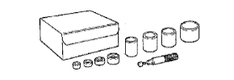
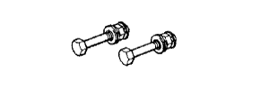

ПЕРЕДНИЙ АМОРТИЗАТОР > РАЗБОРКА > Подготовка

|  | 09710-30012 | Комплект оправок для втулок задней подвески |
| (09710-04071) | подшипника карданного шарнира | |
| (09710-04081) | Основание | |
 | 09727-00060 | Набор держателей C |
 | 09727-30021 | Приспособление для сжатия цилиндрических винтовых пружин |
|  | (09727-00010) | Набор болтов |
 | (09727-00031) | Компрессор |
| Латунный стержень | - |
| Зубило | - |
| Съемник фиксаторов | - |
| Динамометрический ключ | - |
 | 09010-3C100 | Комплект торцевых шестигранных головок | - |
 | (09013-6C110) | Торцевой шестигранный ключ 6 мм | - |
 | 09050-00032 | Пневматическое сверло | - |
 | 09905-00012 | Съемник пружинных стопорных колец № 1 | - |